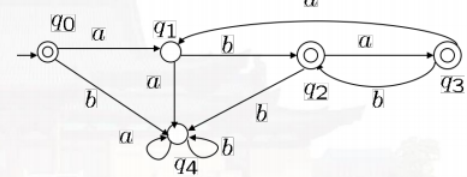
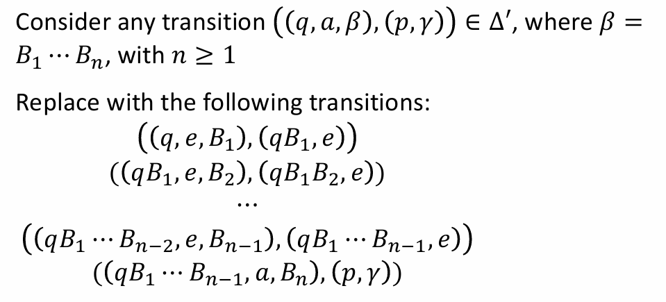
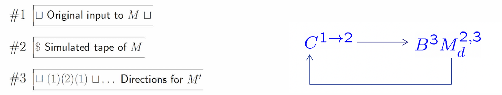

计算理论¶
约 13042 个字 11 张图片 预计阅读时间 43 分钟
授课信息
授课教师：顾实 / 金小刚（顾老师实际授课）
参考资料
写在前面...
所谓计算理论，大致上说，就是计算机科学的理论基础。它以抽象的方式研究计算机“算什么/什么能被计算”（可计算性）、“怎么算”（自动机模型）、“算的代价”（复杂性）。
在计算机科学中，对于同一个话题，我们主要研究四类问题：
-
优化问题。例如，找一个图的最小生成树。
-
搜索问题。例如，找一个权重和 \(\le k\) 的生成树。
-
决策问题。例如，判断是否存在一个权重和 \(\le k\) 的生成树。
-
计数问题。例如，一个图总共有多少权重和 \(\le k\) 的生成树。
在这其中，我们主要研究决策问题。
-
输出简单，要么是 Yes ，要么是 No。
-
这也把所有的输入实例分成了两类：让答案为“是”的 Yes-instance 和让答案为“否”的 No-instance。
-
由于难度等价性，研究了决策问题的难度，就基本掌握了其他问题的难度。
本课程的逻辑（应该）是，从小范围（特解）逐渐向大范围（通解）介绍对计算的抽象。
01 集合、关系（数学基础）¶
三种基础的证明方法¶
-
归纳法 (Induction)
-
鸽笼原理
-
对角线论法（反证法）
康托尔定理 (Cantor's Theorem)¶
集合 \(A\) 的幂集（所有子集的集合）\(P(A)\) 的势严格大于 \(A\) 的势，即 \(\text{card}(A) < \text{card}(P(A))\) 对所有集合 \(A\) 都成立。
证明
令 \(f\) 是一个从 \(A\) 到其幂集 \(P(A)\) (\(2^A\)) 的单射。显然地，\(\text{card}(A) \le \text{card}(P(A))\)。
我们需要证明 \(A \neq P(A)\)，即我们要证明这个单射(injection) \(f\) 不能是满射的(surjective)。
采取反证法。构造一个集合 \(B = \{x \in A \mid x \notin f(x)\}\)。由于假设 \(f\) 是满射，那么在 \(A\) 中必然存在一个元素 \(t\)，使得 \(f(t) = B\)。接下来考虑 \(t\) 与 \(B\) 的关系：
-
如果 \(t \in B\)：那么根据集合 \(B\) 的定义，可知 \(t \notin f(t)\)。但由于我们假设了 \(f(t) = B\)，这推导出了 \(t \notin B\)，产生矛盾。
-
如果 \(t \notin B\)：那么根据集合 \(B\) 的定义，可知 \(t \in f(t)\)。同样由于 \(f(t) = B\)，这推导出了 \(t \in B\)，再次产生矛盾。
证明的核心就是“对角线论法”。
Considering the set \(T\) of all infinite sequences of binary digits (i.e. each digit is zero or one).
Is \(T\) countable?
\(T\) is uncountable（\(T\) 不可数）。
我们注意到，我们可以将 \(T\) 中的某个序列 \(s\) 中 1 的位置表示为自然数集的子集，例如对于 \(\{ 1, 4 \}\)，我们可以解释为 \(s\) 只有第 1 和第 4 位是 1 （从 0 开始计，当然不从 0 也无所谓），其余位置为 0 。这样，\(T\) 和自然数集 \(\mathbb N\) 的幂集 \(P(\mathbb N)\) 存在一一对应关系（存在一个双射）。那么，\(| T | = | P(\mathbb N) |\)。
由康托尔定理，我们有：
因此，\(| T | > | \mathbb N |\)；我们无法做到为每一个可能的无限序列编号，因此 \(T\) 不可数。事实上，可数的数学定义就是存在一个从 \(S\) 到自然数集 \(\mathbb N\) 的单射 (Injection) 函数（直观地说，能以自然数编号）。
闭包及其性质¶
如果一个集合中的元素在进行某种运算后，结果仍然在该集合中，称该集合对该运算封闭 (closed)。
例如，自然数集对加法封闭，但对减法不封闭。整数 \(\mathbb Z\) 是包含 \(\mathbb N\) 且对减法封闭的最小集合，那么 \(\mathbb Z\) 就是 \(\mathbb N\) 在减法下的闭包 (closure)（ The set \(\mathbb Z\) is called a closure of \(\mathbb N\) under subtraction.）。
关系的闭包¶
简单来说，关系 \(R\) 的闭包就是通过给关系添加最少数量的新元素，来使得添加之后的关系 \(R'\) 满足一定的性质 \(P\)，这个新的关系 \(R'\) 就被称为关系 \(R\) 关于性质 \(P\) 的闭包。
正式定义
假设 \(R\) 是集合 \(A\) 上的一个二元关系，\(P\) 是某种性质（如自反性、对称性或传递性）。如果存在另一个关系 \(R'\)，满足以下三个条件，则称 \(R'\) 是 \(R\) 关于性质 \(P\) 的闭包： 1. 包含性：\(R \subseteq R'\) （原有的关系都在里面）。 2. 性质性：\(R'\) 具有性质 \(P\)。 3. 最小性：对于任何包含 \(R\) 且具有性质 \(P\) 的关系 \(S\)，都有 \(R' \subseteq S\)（它是满足条件的所有关系中“最小”的那一个，不多加任何没用的元素）。
最常用的闭包有三种，自反 (Reflexive)、对称 (Symmetric)、传递 (Transitive)。读者可以回顾离散数学课程的相关内容。
- 我们一般将关系 \(R\) 的自反传递闭包记为 \(R^\ast\) 。其定义是
- 我们一般将关系 \(R\) 的传递闭包记为 \(R^+\) 。
02 形式语言的理论基础¶
我们为什么要这样抽象地研究它？
总感觉这里解释的不太好。回来再想想怎么解释，先复习吧。
考虑一个决策问题。它完全可以抽象为：给定一个串 \(w\)，判断 \(w\) 是否属于所有 yes-instance 编码的集合 \(L\)。这里的 \(L\) 也就是语言。
首先我们想一门人类的语言。无论它有没有文字，一门语言总是包含一些音素。它们的组合可以表达一个词语、短语或者句子，组成各种表达。研究表明，人类可以发出的音素数量是有限的。
2.1 符号化表示¶
我们定义：
-
字母表 (Alphabet ，记为 \(\Sigma\))：一个有限集合。集合内的元素被称作符号 (Symbols)。
-
字符串 (String)：由 \(\Sigma\) 中的符号组成的有限序列，称作 String over \(\Sigma\) 。
-
空串 (\(\varepsilon\) 或者 \(e\))：长度为 0 的字符串。
-
\(\Sigma^\ast\) 表记字母表 \(\Sigma\) 上所有可能字符串的集合；
\(\Sigma^+\) 表记字母表 \(\Sigma\) 上所有非空字符串的集合（正闭包）；
\(\Sigma^i\) 表记字母表 \(\Sigma\) 上所有长度为 \(i\) 的字符串。
所以 \(\Sigma^\ast = \bigcup_{i \ge 0}\Sigma^i\)，\(\Sigma^+ = \bigcup_{i \ge 1}\Sigma^i\)。
-
-
语言 (Language)：是 \(\Sigma^\ast\) 的任意子集（\(L \subseteq \Sigma^\ast\)）。对于有无限个串的语言，我们通常用下面的形式表示：
2.2 字符串运算¶
- 连接 (Concatenation)：\(xy\)。
- 幂运算 (Exponentiation)：\(w^k\) 表示 \(w\) 重复 \(k\) 次。\(w^0 = \varepsilon\)。
- 反转 (Reversal)：\(w^R\)。归纳定义：\(\varepsilon^R = \varepsilon\), \((ua)^R = a u^R\)。
2.3 语言¶
-
基数悖论：
-
对于一个字母表 \(\Sigma\)（有限），字符串集 \(\Sigma^*\) 是可数（可数无限）的。语言总是 \(\Sigma^*\) 的子集，所以一个语言总是可数的。
证明
证明 \(\Sigma^*\) 可数，也就是需要构建一个双射 \(f: \mathbb N \to \Sigma^*\)。
- 我们不妨给字母表里的符号按照某种顺序固定：\(\Sigma = \{a_1, a+2, ..., a_n\}\)。
- 对于字符串集的每一个串，
- 按长度排：长度短的字符串永远排在长度长的字符串前面。
- 同长度按字母表中的顺序排：如果长度一样，就按照预先定好的字母表顺序来排。
这样，每一个串都有一个确定的位置，每一个自然数都对应了一个唯一的字符串（长度 + 字典定位）。
-
语言的集合（即 \(P(\Sigma^*)\)）是不可数的（由康托尔定理）。一个非空字母表形成的所有语言的数量是 \(|\mathbb R|\)。更一般的，一个可数无限集的幂集的势总是 \(|\mathbb R|\)。
不可判定性：计算机程序/算法/正则表达式是有限长度的字符串，因此只有可数无限多个程序。这意味存在无数个无法被计算机描述或解决的语言（问题）。
-
2.4 语言的运算¶
-
集合运算：并 (\(\cup\))、交 (\(\cap\))、补 (\(\bar{L} = \Sigma^* - L\))、差 (\(-\))。
-
连接 (Concatenation)：\(L_1 L_2 = \{xy \mid x \in L_1, y \in L_2\}\)。
-
克林星号 (Kleene Star, \(L^*\))：
- 定义：从 \(L\) 中取任意个（包括 0 个）字符串进行连接所组成的所有字符串的集合。
-
\(L^* = \bigcup_{i \ge 0} L^i = L^0 \cup L^1 \cup L^2 \dots\)
我们以 \(L^k\) 表示从 \(L\) 中任取 \(k\) 个字符串所有可能的集合。
-
总是包含 \(\varepsilon\)，因为 \(L^0 = \{\varepsilon\}\)。
-
正闭包 (\(L^+\))：\(L^+ = LL^* = \bigcup_{i \ge 1} L^i\)。
- 如果不包含空串的组合，则 \(L^+\) 不含 \(\varepsilon\)。
2.5 语言的有限表示法：正则表达式¶
由于许多语言是无限集，我们想要一种有限的方式来描述它们。
定义¶
正则表达式采用递归定义法。它是定义在字母表 \(\Sigma \cup \{(,),\cup,\ast\}\) 上的字符串。
- 基础 (原子性， Atomic)：\(\emptyset\) 和 \(\{a\}\) (其中 \(a \in \Sigma\)) 是正则表达式。\(\varepsilon\) (或 \(\{e\}\)) 也是。
- 归纳 (组合性， Composite)：如果 \(\alpha, \beta\) 是正则表达式，则以下也是：
- \(\alpha \cup \beta\)。
- \(\alpha \circ \beta\)（也表示成 \(\alpha \beta\)）。
- \(\alpha^*\)，表示克林星号（重复）。
其实就类似于各编程语言中使用的正则表达式，不过那些“正则表达式”一般都加了不属于这里规定的正则表达式的更多功能。
表示¶
函数 \(\mathcal{L}(r)\) 将正则表达式 \(r\) 映射到它所代表的语言。
-
\(\mathcal{L}(\emptyset) = \emptyset\)
-
\(\mathcal{L}(a) = \{a\}\)
-
\(\mathcal{L}(\alpha \cup \beta) = \mathcal{L}(\alpha) \cup \mathcal{L}(\beta)\)
-
\(\mathcal{L}(\alpha \beta) = \mathcal{L}(\alpha) \circ \mathcal{L}(\beta)\)
-
\(\mathcal{L}(\alpha^*) = (\mathcal{L}(\alpha))^*\)
克林定理 (Kleene's Theorem) 指出，一个语言是正则的，当且仅当它可以被某个正则表达式描述。
正则语言的三个性质
-
每个能用正则表达式表示的语言，都可以用无穷多个不同的正则表达式来表示。（正则表达式和正则语言是多对一的关系。）
-
正则语言类是由基本语言（单个字符和空集）在并、连接和克林星号运算下的闭包。（封闭性。请参考正则表达式的递归定义。）
-
正则表达式在通用性上是不充分的。例如 \(\{0^n 1^n : n \ge 0\}\) 无法被正则表达式描述。（正则表达式本质上对应于有限状态自动机（ DFA ，后面讲到）。DFA 的状态是有限的，它无法记住“已经读入了多少个 0”，即缺乏计数能力。）
重要恒等式 (Identities)¶
- \(SR \ne RS\) (连接不满足交换律)
- \(S \cup R = R \cup S\) (并集满足交换律)
- \(R(ST) = (RS)T\) (连接结合律)
- \(R(S \cup T) = RS \cup RT\)，\((R \cup S)T = RT \cup ST\) (分配律)
- \(\emptyset^* = \{ e \}\) (空集的星号是含空串的集合) \(= e^*\)
- \((R^*)^* = R^*\)
- \((R^* S^*)^* = (R \cup S)^*\)
补充
生成器 vs 识别器
这是计算理论中描述语言的两种视角：
- 生成器 (Generator)：
- 代表：正则表达式。
- 机制：给出一套蓝图或指令，展示如何构造出语言中的字符串（例如：“先写个 a ，再写任意个 b...”）。
- 识别器 (Recognition Device)：
- 代表：有限自动机 (DFA/NFA)。
- 机制：输入一个字符串，机器内部状态流转，最后输出 Yes/No 来判定该字符串是否属于该语言。
\(\emptyset\) vs \(\{ e \}\) * \(\emptyset\) 是空语言，没有元素。 * \(\{ e \}\) 是只包含空串的语言，有一个元素（长度为 0 的串）。 * 在连接运算中：\(L \circ \emptyset = \emptyset\)，但 \(L \circ \{ e \} = L\)。
03 正则语言与有限自动机¶
3.1 确定性有限自动机 (DFA)¶
定义¶
从直观上理解， DFA 是一种计算模型，拥有有限个内部状态。它从左到右读取输入符号，根据当前状态和输入符号转移到下一个状态。更进一步地，一个有限自动机 \(M\) 就是一种“设备”，拥有有限个内部状态，根据收到的字符串是否在对应语言给出“是”或“否”的回答。
- 形式化定义 (5 元组)：一个 DFA \(M\) 表示为 \((K, \Sigma, \delta, s, F)\)。
- \(K\)：有限的状态集合 (States)。
- \(\Sigma\)：输入字母表 (Alphabet)。
- \(s \in K\)：初始状态 (Initial state)。
- \(F \subseteq K\)：接受状态集合 (Final/Accepting states)。
- \(\delta\)：转移函数 (Transition Function)，\(K \times \Sigma \to K\)。
- 对于每一个状态和每一个输入符号， DFA 必须恰好有一个 (unique) 确定的下一状态。
运行机制¶
- 格局 (Configuration)：\((q, w)\) 表示当前在状态 \(q\)，剩余输入串为 \(w\)。
- 转移 (Yield)：
- 一步转移 (\(\vdash_M\))：\((q, aw') \vdash_M (q', w')\) 当且仅当 \(\delta(q, a) = q'\)。
- 多步转移 (\(\vdash_M^*\))：一步转移关系的自反传递闭包。即经过任意步（包括 0 步）后到达的状态。
接受语言 (Language Recognition)¶
- 字符串 \(w\) 被接受的含义是，如果从初始状态出发，自动机读完整个 \(w\) 后停在接受状态 \(F\) 中，我们认为这个串被该自动机接受。即 \((s, w) \vdash_M^* (q, e)\) 且 \(q \in F\)。
- \(L(M)\)：机器 \(M\) 接受的所有字符串构成的集合，也就是说 \(M\) 对应的语言是 \(L(M)\)。
- 如果自动机 \(M\) 接受语言 \(L\) 中的每一个串，但拒绝任意一个不属于该语言的串，我们称该自动机接受 (accept) 语言 \(L\)。
3.2 非确定性有限自动机 (NFA)¶
我们发现，对于有些问题，如果使用自动机，我们需要费很大劲来确认这个自动机长什么样，例如，接受语言 \(L=(ab \cup aba)^*\) 的自动机至少要五个状态：

因此，我们考虑设计简化自动机，于是我们有了 NFA。NFA 允许“猜测”路径，只要存在一条成功的路径即视为接受。
定义¶
- 与 DFA 的区别：
- 多重路径：对于一个输入符号，可以转移到多个状态，也可以没有转移。
- \(\varepsilon\)-转移 (e-moves)：允许不读取任何输入符号就改变状态。
-
形式化定义 (5 元组)：\((K, \Sigma, \Delta, s, F)\)，标识符含义与 DFA 基本一致。
\(\Delta\) 是一个关系 (Relation) 而不一定是函数
\(\Delta \subseteq K \times (\Sigma \cup \{e\}) \times K\)。因为对于同一个当前状态和同一个输入， NFA 可以跳转到不同的状态（分支）。三元组 \((p, u, q)\) 就表示状态 \(p\) 读到 \(u\) 时跳转到状态 \(q\)。
3.3 NFA 与 DFA 的等价性¶
-
定理：任何 NFA 都有一个等价的 DFA （即接受相同的语言），反之结论显然。
这意味着 NFA 没有比 DFA 更强的表达能力，只有表达上的简洁性。
NFA 转 DFA
构造算法 (子集构造法 / Subset Construction)：
- 核心思想： DFA 的每一个状态代表 NFA 当前可能处于的所有状态的集合。
- 我们定义概念 \(E(q)\) (\(\varepsilon\)-闭包)：从状态 \(q\) 出发，仅通过 \(\varepsilon\)-转移所能到达的所有状态的集合。
-
构造步骤：
-
新 DFA 的起始状态 \(s' = E(s)\)。
-
对于新状态（集合）\(Q \subseteq K\) 和输入 \(a \in \Sigma\)，新转移 \(\delta(Q,a) = \mathop{\bigcup}\limits_{p \in Q} E(\text{states reachable from } p \text{ by } a)\)。
这里书上用的形式化表达是 \(\delta(Q,a) = \bigcup\{E(p) | q \in Q \wedge p \in K \wedge (q,a,p) \in \Delta\}\)。
-
只要集合中包含原 NFA 的任意一个接受状态，该集合即为 DFA 的接受状态。\(F' = \{Q | Q \subseteq K, Q \cap F = \emptyset\}\)
-
-
由于状态集 \(K'\) 理论上是 \(K\) 的幂集，最坏情况下， DFA 的状态数是 \(2^{|K|}\)（指数级爆炸）。但通常，大部分的状态与自动机要完成的运算无关。
小练习
作业题：考虑语言 \((ab \cup aab \cup aba)^*\)。
- 找到一个接受该语言的简单的 NFA ；
- 将这个 NFA 转化为 DFA。
解答：
-
可以画出如下所示的图。

-
考虑子集构造法：
- 起始状态：\(\{q_0\} (A)\)
- \(\delta(\{q_0\}, a) = \{q_1\} (B)\)
- \(\delta(\{q_0\}, b) = \emptyset\) (Trap)
- \(\delta(\{q_1\}, a) = \{q_2\} (C)\)
- \(\delta(\{q_1\}, b) = \{q_0, q_3\} (D)\)
- \(\delta(\{q_2\}, a) = \emptyset\)
- \(\delta(\{q_2\}, b) = \{q_0\} (A)\)
- \(\delta(\{q_0, q_3\}, a) = \{q_1, q_0\} (E)\)
- \(\delta(\{q_0, q_3\}, b) = \emptyset\)
- \(\delta(\{q_0, q_1\}, a) = \{q_1, q_2\} (F)\)
- \(\delta(\{q_0, q_1\}, b) = \{q_3, q_0\} (D)\)
- \(\delta(\{q_1, q_2\}, a) = \{q_2\} (C)\)
- \(\delta(\{q_1, q_2\}, b) = \{q_3, q_0\} (D)\)
最终的 DFA（省略了死状态！建议考试有时间还是画出来）：

关于死状态 (Trap State)...
-
对于 NFA 来讲，转移是一个“关系”。如果某个状态面对某个字符没有对应的转移三元组，机器就直接在该路径上“死亡”（拒绝）。这种“死路一条”是 NFA 天生的特性，不需要专门画一个状态来承载。
-
对于 DFA 来讲，转移是一个“函数”。如果不画死状态，从数学定义上讲，这个自动机是不完备的（被称为 Partial DFA ）。所以虽然为了简洁起见经常省略，但如果要求画一个 complete 的 DFA ，我们仍然需要画出死状态。
3.4 等价性定理¶
请读者再一次回顾 2.5 节中的内容。
克林定理 (Kleene's Theorem)¶
一个语言是正则的，当且仅当它被有限自动机 (DFA/NFA) 接受，当且仅当它能用正则表达式描述。
证明
证明方向 A ：正则表达式 \(\to\) FA (递归构造) * 利用 NFA 的封闭性（实际上就是正则语言的封闭性）进行构造： * 并集：引入新起点，\(\varepsilon\)-转移到两个分支。 * 连接：前一个的终点 \(\varepsilon\)-转移到后一个的起点。 * 星号：终点回环到起点，起点直通终点（通过 \(\varepsilon\)）。
证明方向 B ： FA \(\to\) 正则表达式 (状态消除法 / GNFA)
对应“自动机对应什么正则表达式”的问题。
课件中的方法 (\(R(i, j, k)\))：
-
定义 \(R(i, j, k)\) 为从状态 \(q_i\) 到 \(q_j\)，且中间经过的状态编号不超过 \(k\) 的所有字符串集合。
\(R(i, j, k) = \{w \in \Sigma^*; (q_i,w) \vdash_{M,k}^* (q_j,e)\}, i,j = 1,2,3,...,n; k = 0,1,2,...,n\)
-
递归公式：\(R(i, j, k) = R(i, j, k-1) \cup R(i, k, k-1) R(k, k, k-1)^* R(k, j, k-1)\)。
-
这本质上是动态规划（ Floyd-Warshall 算法的变体）。
状态消除求正则表达式¶
从直观上讲，我们可以通过广义自动机 (Generalized FA)的方法求对应的正则表达式。
标准的 DFA 或 NFA 可能有多个接受状态，且起始状态可能有进入的箭头。为了能用“状态消除法”提取正则表达式，我们需要把自动机“规范化”： * 只有一个起始状态，且没有任何箭头指向它。 * 只有一个接受状态，且它没有任何箭头指出去。
-
将自动机转换为 GNFA ：
-
重命名原始状态： 假设原始自动机 \(M\) 有 \(n-2\) 个状态，我们将它们标记为 \(q_1, q_2, \dots, q_{n-2}\)。其中 \(s\) 是原来的起始状态。
-
添加两个新状态：
- \(q_{n-1}\)：作为新的起始状态 (\(s_G\))。
- \(q_n\)：作为新的接受状态 (\(f_G\))。
-
建立连接：
- 从新的起始状态 \(s_G\) 画一条 \(\varepsilon\) 边指向旧的起始状态 \(s\)。
- 从所有旧的接受状态（集合 \(F\) 中的状态）画 \(\varepsilon\) 边指向新的唯一接受状态 \(f_G\)。
-
数学定义 (\(\Delta_G\))： 新的转移关系 \(\Delta_G\) 等于： \(\Delta \cup \{(q_{n-1}, e, s)\} \cup \{(q, e, q_n),q \in F\}\)。
-
-
符号说明
- \(e\)：表示空串转移。即不需要读入任何字符，机器就可以直接跳过去。
- \(M\)：代表原来的整个自动机。
- \(M_G\)：代表扩展后的“广义”自动机。
- \(L(M) = L(M_G)\)：这说明这种构造没有改变自动机识别的语言。原来的字符串能被 \(M\) 接受，现在也能通过这条“高速公路”到达新的终点 \(f\)。
构造好这个 GNFA 之后，你下一步要做的就是状态消除：
- 每次删掉中间的一个状态（比如 \(q_1\)）。
- 为了补偿删掉的状态，把原来的字符路径改成正则表达式（比如从 \(a \to b\) 变成 \(ab\)）。
- 重复这个过程，直到只剩下 \(s_G\) 和 \(f_G\)。
- 最后这两点之间连线上的那个巨大表达式，就是该自动机对应的正则表达式。
3.5 泵引理 (Pumping Lemma) —— 用于证明“非正则”¶
- 定理内容：若 \(L\) 是正则的，则存在长度 \(n\)（泵长度），使得任意长度 \(\ge n\) 的字符串 \(w \in L\) 都可以被分割为 \(w = xyz\)，满足：
- \(|xy| \le n\)
- \(y \ne e\) (\(|y| > 0\))
- \(\forall i \ge 0, xy^iz \in L\)
- 证明非正则的思路：鸽笼原理。自动机状态有限，长字符串必然导致状态重复（环）。这个环对应的就是 \(y\)。
- 你（证明者）想证明 \(L\) 不是正则的。
- 对手声称 \(L\) 是正则的。
- 步骤：
- 对手选定一个 \(n\)。
- 你找出一个特例字符串 \(w \in L\)（长度 \(\ge n\)）。
- 对手把 \(w\) 分解为 \(xyz\)。
- 你选择一个 \(i\)（通常是 0 或 2 ），证明 \(xy^iz \notin L\)，从而导出矛盾。
典型非正则语言例子
-
\(L = \{a^n b^n \mid n \ge 0\}\)：需要“计数”或“记忆”数量，有限状态机做不到。
-
\(L = \{ww^R \mid w \in \Sigma^*\}\)：回文串。
-
\(L = \{a^p \mid p \text{ is prime}\}\)：素数长度。
证明
假设 \(L\) 正则。那么必然存在 \(w = xyz \in L\)；不妨令 \(x = a^p, y = a^q, z = a^r\)，其中 \(p,r \ge 0, q > 0\)。
由泵引理，我们有：对于每个非负的 \(n\)，\(xy^nz \in L\)，也即 \(p + nq + r\) 总是素数。
但这不可能。令 \(n = p + 2q + r + 2\)，那么此时 \(p + nq + r = (q + 1) \cdot (p + 2q + r)\)。
导出矛盾，所以原语言不是正则的。
极小化 DFA
- 问题：给定一个 DFA ，是否存在状态更少的等价 DFA ？
- Myhill-Nerode 定理：
- 可区分性 (Distinguishability)：如果存在字符串 \(w\) 使得 \(\delta(p, w) \in F\) 而 \(\delta(q, w) \notin F\)（反之亦然），则状态 \(p\) 和 \(q\) 是可区分的。
- 算法 (填表法)：
- 标记所有接受状态和非接受状态对。
- 迭代标记：如果 \((p, q)\) 的某个输入 \(a\) 转移到了已被标记的对 \((\delta(p, a), \delta(q, a))\)，则标记 \((p, q)\)。
- 未被标记的对合并。
- 结论：每个正则语言都有（同构意义下）唯一的最小 DFA。
3.6 判定性问题¶
对于正则语言，以下问题是可判定的（即存在算法解决）：
-
成员性 (Membership)：\(w \in L(M)\)？（模拟运行 DFA 即可）。
-
空性 (Emptiness)：\(L(M) = \emptyset\)？（检查从起点到终点是否有路径， BFS/DFS ）。
-
有限性 (Finiteness)：\(L(M)\) 是有限集吗？（检查是否存在从起点可达且能到达终点的环）。
-
等价性 (Equivalence)：\(L(M_1) = L(M_2)\)？（检查 \((L(M_1) \cap \overline{L(M_2)}) \cup (\overline{L(M_1)} \cap L(M_2))\) 是否为空）。
正则语言的局限性
虽然正则语言能处理模式匹配（如 grep），但无法处理嵌套结构（如编程语言中的括号匹配、HTML 标签配对）。这引出了下一章的内容：上下文无关文法 (Context-Free Grammars) 和 下推自动机 (Pushdown Automata)。
04 上下文无关语言与下推自动机¶
我们已经看到了确定性有限自动机（正则语言）的有限之处。但正如我们在 2.5 节中提到的，我们仍然想要用有限的表示描述无限的语言。我们需要一个更强的生成装置。
一般来讲这里的内容足够分成两章。但是我想借用这样的标题引发读者比较本章内容和前一章内容。
4.1 上下文无关文法 (CFG)¶
-
形式化定义 (4 元组)：一个 CFG \(G\) 表示为 \((V, \Sigma, R, S)\)。
- \(V\)：字母表 (Variables/Alphabets)。
- \(\Sigma \subseteq V\)：终结符集合 (Terminals)。
- \(R\)：产生式规则集合 (Rules)。形式为 \(A \to w\)，其中 \(A \in V - \Sigma, w \in V^*\)。不难看出 \(R \subseteq (V-\Sigma) \times V^*\)。
- \(S\)：起始变元 (Start variable, \(S \in V - \Sigma\))。
-
推导 (\(\Rightarrow\))：对于一个 CFG \(G\)，任意的 \(x,y,z,w,u \in V^*\) 和任意的 \(A \in V-\Sigma\)：
- 一步推导；\(uAv \Rightarrow_G u\beta v\) if \((A, \beta) \in R\)
- 一般的推导：\(w \Rightarrow_G^* u\) if \(w = u \vee w \Rightarrow_G ... \Rightarrow_G u\)
-
语言 \(L(G)\)：\(\{w \in \Sigma^* | S \Rightarrow^* w\}\)。即从 \(S\) 出发能推导出的所有终结符串。如同正则语言的判定，我们说如果一个语言能由一个 CFG 生成（\(L = L(G)， G~\text{is CFG}\)），那么该语言就是上下文无关语言 (CFL)。
所有正则语言都是 CFL ，但反之不然（\(\text{Regular Languages} \subseteq \text{CFL}\)）。（如 \(\{a^n b^n \mid n \ge 0\}\) 是 CFL 但不是正则语言）。
提示
-
Language \(L\) is CFL iff it is accepted by a CFG.accept 是不对的。因为 CFG 是一个生成串的 relation ，我们只能说由 CFG 生成 (generated)。
-
The set of terminals is always nonempty.在定义下，终结符集合可以是空集。定义只要求终结符集合有限。在终结符是空集的情况下， CFG 要么生成空语言，要么只包含空串。
-
The set of non-terminals is always nonempty.
这句话是正确的。无论怎么说，起始变元都是非终结符。
4.2 文法的范式 (Normal Forms)¶
- 乔姆斯基范式 (Chomsky Normal Form, CNF)：
- 所有规则形式均为 \(A \to BC\) 或 \(A \to a\)。
- 性质：任何长度为 \(n\) 的字符串在 CNF 中文法的推导步数正好是 \(2n-1\)。
- 格雷巴赫范式 (Greibach Normal Form, GNF)：
- 规则形式为 \(A \to a\alpha\)（\(a\) 是终结符，\(\alpha\) 是变元串）。
- 性质：非常适合用于构造对应的下推自动机。
4.3 推导、解析树与二义性¶
-
解析树 (Parse Tree)：可以表示一个 CFG 的推导。
-
根节点是 \(S\)，叶节点是终结符或 \(\varepsilon\)，内部节点是变元；反过来说，终结符或 \(\varepsilon\) 只能出现在叶节点，变元只能出现在内部节点。
-
直观展示了字符串的语法结构。
-
对于同一个 CFG 和同一个串，我们或许有许许多多推导的过程。考虑两个推导
\(D\) 先于 (preceds/precede) \(D'\) (\(D \prec D'\)) \(\Leftrightarrow \exists~1 \le k \le n\)，使得：
- 对于所有的 \(i \ne k\)，\(x_i = x'_i\)
- \(x_{k-1} = x'_{k-1} = uAvBw\)，其中 \(u,v,w \in V^*\)，\(A,B \in V-\Sigma\)
- \(x_k = uyvBw ， x'_k = uAvzw\)，其中 \(A \to y \in R, B \to z \in R\)
- \(x_{k+1} = x'_{k+1} = uyvzw\)
\(D\) 和 \(D'\) 相似 (similar) \(\Leftrightarrow (D, D')\) 在 \(\prec\) 的自反、对称、传递闭包上。
辨析
但我们不能武断地说，只要 \(x_1 = x'_1, x_n = x'_n\)，两个推导就一定是相似的。有可能它们存在两处或以上的不同（不妨加一个中间者来验证这一点）。
我们规定两种推导类型：
-
最左推导 (Leftmost Derivation)：每一步都替换最左边的非终结符。
-
最右推导 (Rightmost Derivation)：每一步都替换最右边的非终结符。
不难发现，
-
对于给定的一棵解析树，
采用（左子树优先的）前序遍历展开非终结符，可以得到最左推导；
采用右子树优先的前序遍展开非终结符，可以得到最右推导。
-
对于给定的最左或最右推导，
我们也可以唯一确定一棵解析树（上面的方式反过来）。
可以看出，解析树和最左/最右推导之间是一对一映射。（一棵解析树对应唯一的最左推导和唯一的最右推导。）
-
二义性 (Ambiguity)：
-
定义：如果一个字符串 \(w\) 在给定文法下存在两棵不同的解析树（或两个不同的最左推导），则称该文法是二义的。
-
例子：算术表达式 \(E \to E + E \mid E * E \mid id\) 对字符串
id + id * id有两种解析树（先加还是先乘）。 -
固有二义性 (Inherent Ambiguity)：有些语言本身就是二义的，无论怎么设计文法，都无法消除二义性（例如 \(\{a^n b^n c^m d^m\} \cup \{a^n b^m c^m d^n\}\)）。
-
4.4.1 下推自动机 (Pushdown Automata, PDA)¶
基本定义¶
- 核心思想： PDA = 有限自动机 (FA) + 栈 (Stack)。栈提供了无限的“后进先出”存储（写）能力，使其能处理嵌套结构。
- 形式化定义 (6 元组)：\(M = (K, \Sigma, \Gamma, \Delta, s, F)\)。
- \(K\)：状态集。
- \(\Sigma\)：输入字母表。
- \(\Gamma\)：栈字母表 (Stack Alphabet)。（比自动机多的东西！）
- \(s\)：初始状态。
- \(F\)：接受状态集。
- \(\Delta\)：转移关系 (非确定性)。每个 Component 形式为 \(((p, u, \beta), (q, \gamma)) \in \Delta\)。这里 \(\beta, \gamma \in \Gamma^*\)
- 含义：在状态 \(p\)，读入输入 \(u\) (可以是 \(\varepsilon\)。课件上把这个描述成“磁带头”，读入的输入非空就往前挪，读入空串就不动)，弹出栈顶 \(\beta\)，转移到状态 \(q\)，压入 \(\gamma\)。
- 在画图的时候，\(((p, u, \beta), (q, \gamma))\) 常表示成：

需要特别注意的是，即使符号可能相同，栈字母表和输入字母表是完全独立的两个表。PDA 不是从输入拿字符到栈上的； PDA 用栈来辅助自己判断下一步应该怎么办。
符号晦涩难懂？来看个例子！

根据图示，我们可以知道 \(M\) 的转移关系有五个 Components ：
- \(((q_0, a, e), (q_0, a)) \to\) 读到了输入 \(a\)，将栈字母表中的符号 \(a\) 压栈；
- \(((q_0, b, e), (q_0, b)) \to\) 读到了输入 \(b\)，将栈字母表中的符号 \(b\) 压栈；
- \(((q_0, c, e), (q_1, e)) \to\) 读到了 \(c\)，进入接受态；
- \(((q_1, a, a), (q_1, e)) \to\) 如果栈顶为 \(a\)，又读到输入 \(a\)，则将栈字母表中的符号 \(a\) 弹出；
- \(((q_1, b, b), (q_1, e)) \to\) 如果栈顶为 \(b\)，又读到输入 \(b\)，则将栈字母表中的符号 \(b\) 弹出。
这个自动机对应的语言 \(L(M) = \{wcw^R : w \in \{ a,b \}^* \}\)
运行机制与接受条件¶
-
格局 (Configuration)：\((q, w, \alpha)\) 表示当前状态 \(q\)，剩余输入 \(w\)，栈内容 \(\alpha\)。
-
PDA 接受一个字符串的方式：
A PDA \(M\) accepts a string \(w \in \Sigma^*\) iff
-
终态接受 (Acceptance by Final State)：输入读完且停在 \(F\) 中（课件采用此定义）。
\((s,w,e) \vdash_M^* (p,e,e)\) for some \(p \in F\).
-
空栈接受 (Acceptance by Empty Stack)：输入读完且栈变空。
这两种接受方式在非确定性 PDA 下是等价的，可以互相转化。我们说被 \(M\) 接受的语言就是上述字符串的集合。
-
设计一个接受某语言的 PDA
Design a PDA \(M\) to accept the language \(L = \{w \in \{a, b\}^*: w \text{ has the same number of } a\text{'s and } b\text{'s}\}\).
核心思想是，遇到需要记忆的部分就进行压栈操作。一般来讲，我们可以将 PDA 拆分为三个逻辑阶段：
- 压栈。把需要记住的信息压进去。
- 状态转换。特别地，有时候需要 \(\varepsilon\)-转移来猜测。
- 出栈。读入输入，弹出栈顶并比对，比对成功则继续。
Solution:
-
Let \(M = (K, \Sigma, \Gamma, \Delta, s, F)\), where \(K = \{s, q, f\},~\Sigma = \{a, b\},~\Gamma = \{a, b, c\},~F=\{f\}\)
-
\(\Delta\)：
- \(((s,e,e),(q,c))\)
- \(((q,a,c),(q,ac))\)
- \(((q,a,a),(q,aa))\)
- \(((q,a,b),(q,e))\)
- \(((q,b,c),(q,bc))\)
- \(((q,b,b),(q,bb))\)
- \(((q,b,a),(q,e))\)
- \(((q,e,c),(f,e))\)

4.4.2 确定性下推自动机 (DPDA)¶
- 定义：对于任意格局，至多只有一种可能的动作（无 \(\varepsilon\)-转移冲突）。
- 局限性：
- DPDA < NPDA：与有限自动机不同，确定性 PDA 的能力弱于非确定性 PDA。
- DCFL (Deterministic CFL)：被 DPDA 接受的语言。
- 例如：回文 \(\{ww^R\}\) 是 CFL 但不是 DCFL （因为机器不知道中间点在哪，必须猜，只能用 NPDA ）。
4.5 等价性定理¶
一个能被 PDA 接受的语言一定是一个 CFG 生成的，反之也成立。即如果一个语言被 PDA 接受，那么它是 CFL。
CFG to PDA (构造法)¶
- 思路： PDA 模拟 CFG 的最左推导。
- 构造：
- 栈中初始放入 \(S\)。
- 若栈顶是变元 \(A\)，非确定性地选择规则 \(A \to w\)，将 \(A\) 弹出并压入 \(w\)（展开）。
- 若栈顶是终结符 \(a\)，则从栈顶弹出该终结符，匹配输入的 \(a\)（匹配）。
PDA to CFG (构造法)¶
-
思路：文法中的变元需要表示 PDA "从状态 \(p\) 到状态 \(q\) 且清空了期间压入的栈" 的过程。
-
简单 PDA (Simple PDA)：如果当前状态不是起始状态，那么限制每一步动作要么 pop 1 个，要么 push 0-2 个符号。
PDA 转等价简单 PDA
类似将 FA 化为 GFA ，如果 PDA \(M = (K, \Sigma, \Gamma, \Delta, s, F)\)，我们构造简单 PDA \(M' = (K \cup \{s', f'\}, \Sigma, \Gamma \cup \{Z\}, \Delta', s', \{f'\})\)。\(Z\) 是栈底元素。 \(\Delta'\) 包含：
- \(((s', e, e),(s, Z))\)
- For each \(f \in F\), \(((f, e, Z),(f', e))\)
- All transition of \(\Delta\)，但需要替换为满足条件的等价形式：
- 替换 \(|\beta| \ge 2\) 的转换； 
- 替换 \(|\gamma| > 2\) 的转换（同时避免引入 \(|\beta| \ge 2\)）。

- 变元构造：非终结符形如 \(\langle p, X, q \rangle\)，对应从状态 \(p\) 开始，栈顶是 \(X\)，经过一系列计算最终到达状态 \(q\) 并把这个 \(X\) 弹出的过程。
4.6 泵引理 (Pumping Lemma for CFL) —— 用于证明不是 CFL¶
- 定理：若 \(L\) 是 CFL ，则存在长度 \(p\)，对任意 \(s \in L\) 且 \(|s| \ge p\)，可分解为 \(s = uvxyz\)，满足：
- \(|vxy| \le p\) (泵出的部分长度有限)
- \(|vy| > 0\) (至少有一部分是非空的)
- \(\forall i \ge 0, uv^ixy^iz \in L\)
- 直观解释：解析树非常高时，必然有一条长路径，路径上会出现重复的非终结符（鸽笼原理）。这个重复的非终结符 \(A\) 导致了可以被重复生成的结构（\(A \Rightarrow^* vAy\)）。
- 博弈论应用：与正则语言类似，通过与“对手”博弈来寻找矛盾。
- 典型非 CFL 例子：
- \(L = \{a^n b^n c^n \mid n \ge 0\}\)（因为 CFL 只有两个“泵”位置 \(v, y\)，无法同时照顾到 \(a, b, c\) 三个部分）。
- \(L = \{ww \mid w \in \{0,1\}^*\}\)（复制语言，因为栈 LIFO ，开始读后半部分 \(w\) 时，需要比对现在在栈底的那个第一个字符，但显然无法完成）。
- \(L = \{a^p \mid p \text{ is prime}\}\)（若单字母表语言是 CFL 则必是正则，但素数语言不是正则）。
泵引理的泵到底是什么
就是那些可以被复制任意多次的片段，类比成水泵源源不断。
CFL 的局限性
我们可以看到，虽然有了栈能够解决更多的语言了，但是，栈只能对栈顶进行操作。这引出了下一章内容，图灵机。
4.7 CFL 的封闭性¶
- 封闭的运算：
- 并 (Union): \(S \to S_1 \mid S_2\)。
- 连接 (Concatenation): \(S \to S_1 S_2\)。
- Kleene 星号 (Star): \(S \to S S_1 \mid \epsilon\)。
- 逆转 (Reversal)。
- 不封闭的运算：
- 交 (Intersection)：\(L_1 \cap L_2\) 不一定是 CFL。
- 例：\(\{a^n b^n c^*\} \cap \{a^* b^n c^n\} = \{a^n b^n c^n\}\) (非 CFL)。
- 补 (Complementation)：如果 CFL 对补封闭，由德摩根律可知它对交也封闭，导出矛盾。
- 交 (Intersection)：\(L_1 \cap L_2\) 不一定是 CFL。
- 特殊情况：
- CFL \(\cap\) 正则语言 = CFL (课件中证明了这一点，通过构造 PDA 与 DFA 的“积自动机”实现)。
- DCFL 在补运算下封闭，而一般 CFL 不封闭。
4.8 判定性问题¶
- 成员性：给定 \(w\)，问 \(w \in L(G)\)？
- CYK 算法：基于动态规划，时间复杂度 \(O(n^3)\)。需要先将文法转为 CNF。
- 空性：\(L(G) = \emptyset\)？
- 可判定。检查起始符 \(S\) 是否能推导出终结符串（标记法）。
- 有限性：\(L(G)\) 是有限集吗？
- 可判定。检查生成的依赖图中是否存在环。
- 等价性无法判定！：
- 判断两个 CFG 是否等价 (\(L(G_1) = L(G_2)\)?) 是不可判定的；
- 判断 CFG 是否有二义性是不可判定的。
总结：正则语言 vs 上下文无关语言
| 特性 | 正则语言 (Regular) | 上下文无关语言 (CFL) |
|---|---|---|
| 生成器 | 正则表达式 | 上下文无关文法 (CFG) |
| 识别器 | 有限自动机 (DFA/NFA) | 下推自动机 (PDA) |
| 核心限制 | 有限内存 | 无限栈内存 (后进先出) |
| 典型例子 | \(\{a^n \mid n \ge 0\}\) (Parity) | \(\{a^n b^n \mid n \ge 0\}\) (Matching) |
| 泵引理 | \(w = xyz\) | \(w = uvxyz\) |
| 封闭性 | 并, 交, 补, 连接, 星号 | 并, 连接, 星号 (交, 补不封闭) |
| 等价性判定 | 可判定 | 不可判定 |
05 递归可枚举语言与图灵机¶
我们已经发现了前面内容之间的关系。读者可以继续联系本章内容和前一章内容。在这一章里，图灵机是判定器视角，无限制文法是生成器视角。
我们已经看到了栈（ PDA ）的局限性。有没有更广泛的办法？如果我们把栈和输入带结合起来，让这个带子可写呢？
邱奇-图灵论题 (Church-Turing Thesis)
人类计算者 (Human Computer) 的计算过程（读写符号、状态转移、移动注意力）都可以被通用图灵机精确模拟。换句话说，任何“算法”可计算的过程，都可以由通用图灵机 (Universal Turing Machine, UTM) 计算。它是一个公理/假设，而非数学定理，但目前所有已知的计算模型（如 \(\lambda\) 演算、递归函数）都被证明与图灵机等价。
5.1 图灵机定义¶
- 形式化定义 (5 元组)：\(M = (K, \Sigma, \delta, s, H)\)
- \(K\)：有限状态集。
- \(\Sigma\)：字母表（包含输入符号、空格 \(\sqcup\)、左端点 \(\triangleright\)）。请注意字母表不包含左右移（\(\leftarrow, \to\)）。
- \(s\)：初始状态。
- \(H\)：停机状态集 (Halting states)，通常包含 \(\{y, n\}\) (Yes/No)；意味着所有的转移函数中没有以停机状态为起点的转移。如果没有以当前状态为起点的转移函数，图灵机停机。
-
\(\delta\)：转移函数，\((K - H) \to K \times (\Sigma \cup \{\leftarrow, \to\})\)。\(\delta(q, a) = (p, b)\) 表示“当前状态 \(q\) 读到 \(a\)，转为状态 \(p\)，写入 \(b\)”。\(b \in \Sigma \cup \{\leftarrow, \to\}\)，如果 \(b\) 是 \(\leftarrow, \to\) 则代表将读写头左移或右移。特别地，如果 \(a = \triangleright\)，\(b\) 必然是 \(\to\)；\(a \in \Sigma\)，\(b\) 必然不是 \(\triangleright\)。
在图示中经常这样表示（\(L\)，左或 \(R\)，右）：

基础图灵机与图灵机表示法¶
从上面的定义，我们可以定义两种基础的图灵机（在 \(M = (\{s,h\}, \Sigma, \delta, s, \{h\})\) 定义下）：
-
写字符机器（\(M_a\)）：如果 \(a \in \Sigma - \triangleright\)（字母表），那么 \(M_a\) 就是在当前格写入字符 \(a\)。
-
移动磁头机器（\(M_{\leftarrow},~M_{\to}\)）：将磁头向左或向右移动一格。
我们将 \(M_a\) 简记为 \(a\)，\(M_{\leftarrow}\) 简记为 \(L\)，\(~M_{\to}\) 简记为 \(R\)。特别地，\(\delta(s,\triangleright) = (s,\to)\)。
基础的图灵机可以组合。当你看到从一个机器指向另一个机器的箭头，且箭头上标有字符时，它的含义是：“运行前一个机器；完成（停机）后，观察当前磁头下的字符；如果字符匹配，则运行下一个机器。”例如我们可以构建：
这表示这个机器先向右移一格；如果那一格里是箭头上字符中的任何一个，它就再向右移一格。如果箭头上的条件是整个字母表，那么我们可以简记这个组合机器为 \(R^2\)。
你或许还会看到有下标的情况。比如 \(R_{\sqcup}\)，它的意思是一直右移，直到遇到 \(\sqcup\)（停在空格位置）。
5.2 图灵机的运行¶
- 格局 (Configuration)：图灵机在某时刻的快照，包括当前状态、带子内容、读写头位置；可以简记为 \((q, w\underline{a}u)\)。状态分量在 \(H\) 中的格局被称为停机格局。
- 计算 (Computation)：格局的序列 \(C_0 \vdash C_1 \vdash \dots \vdash C_n\)。
- 接受 (Accept)：图灵机在输入 \(w\) 上最终停在接受状态 \(y\)。
5.3.1 图灵机作为判定器¶
判定 (Decide)：¶
-
图灵机 \(M\) 判定 语言 \(L\)，意味着对于所有输入 \(w\)，\(M\) 总能停机。若 \(w \in L\) 则接受，若 \(w \notin L\) 则拒绝。
-
此类语言称为 递归语言 (Recursive Language) 或 可判定语言 (Decidable)。
半判定 (Semidecide)：¶
-
图灵机 \(M\) 半判定 语言 \(L\)，意味着若 \(w \in L\)，则 \(M\) 停机接受；若 \(w \notin L\)，则 \(M\) 要么拒绝，要么死循环（永不停机）。
-
此类语言称为 递归可枚举语言 (Recursively Enumerable, R.E.)。不难发现，如果一个语言是递归的，它一定是 R.E.
这也就是说，相较于只有接受或拒绝两个状态的 PDA 或者 FA ，图灵机即使只有 2 个停机状态（\(y,n\)），也可以通过永不停机来给出一个答案。
5.3.2 图灵机作为函数计算机¶
对于一个图灵机 \(M = (K, \Sigma, \delta, s, H)\)，我们构建一个新字母表 \(\Sigma_0 \subseteq \Sigma - \{ \triangleright, \sqcup \}\)，以及令 \(w \in \Sigma_0^*\)。如果我们标记图灵机输入的内容是 \(w\)，经过运算停机时带子上的内容是 \(y\)，那么 \(y = M(w)\) 就是图灵机 \(M\) 在输入 \(w\) 上的输出。
我们定义一个函数 \(f: \Sigma_0^* \to \Sigma_0^*\)。如果 \(\forall w \in \Sigma_0^*, M(w) = f(w)\)，我们称这个图灵机可以计算 (compute) 该函数。另一方面，如果对于某个函数，存在一个图灵机能够计算它，那么这个函数是 可计算(computable) / 递归 的。
拷贝机
能够将 \(\underline{\sqcup} w \sqcup\) 变为 \(\sqcup w \sqcup w \underline{\sqcup}\)，\(w\) 不含 \(\sqcup\)（不然机器不知道哪个该拷贝哪个不该拷贝）。长这样：

5.4 图灵机的变体与等价性¶
这些“增强”的图灵机并不会增加其计算能力（即能解决的问题范围）。也就是说，以下这些图灵机在可计算性上和标准图灵机是等价的。
-
多带图灵机 (Multitape TM)：
- 模型：有 \(k\) 条带子和 \(k\) 个独立读写头（\(\delta : (K-H) \times \Sigma^k \to K \times (\Sigma \cup \{\leftarrow, \to\})^k\)）。
- 约定：输入和输出都会在 第一条带子 上，其他带子上的内容在计算结束会被舍弃。
- 我们通常用构造的方法证明多带图灵机和标准图灵机的等价性，也叫用标准图灵机（\(M'\)）模拟多带图灵机（\(M\)）。 单带图灵机可以通过“多道 (Tracks)”技术模拟多带，并在带子上标记每个虚拟头的位置。也正因如此，\(M'\) 的字母表 \(\Sigma'\) 通常比原字母表 \(\Sigma\) “大”（\(|\Sigma'| \ge |\Sigma|\)）。具体来讲：
模拟方法
- Parse 1 - 初始化
- 右移输入：为了腾出空间并标准化起始位置，先把输入 \(w\) 向右移动一格（前面插一个空格）。
- 设置起始标记：回到 \(\triangleright\)（左端点）右侧的第一格。在这一格写入一个特殊符号，这个符号是一个 \(2k\) 元组：\((\sqcup, 1, ..., \sqcup, 1)\)。
- 这里的 \(1\) 是磁头标记，都是 \(1\) 表示 \(k\) 条带子的磁头全都在当前格（第一格）。
- \(\sqcup\) 相当于表示了当前格存什么。
- 转换剩余输入：磁头（单带图灵机的这个物理磁头）向右走。对于输入 \(w\) 中的每个字符 \(a\)，将其对应格变成 \((a, 0, \sqcup, 0, ..., \sqcup, 0)\)。
- \(0\) 表示磁头不在这些格子上。 这样，我们就利用单带表示出了 \(k\) 个逻辑（虚拟）轨道。第一道存输入，其他道都是空白。
-
Parser2 - 模拟运行
一旦初始化完成，\(M'\) 就开始重复以下步骤来模拟 \(M\) 的每一次状态转移，直到 \(M\) 停机。 在这之前，需要注意，\(M'\) 当前的物理磁头停在第一格未被分轨的格子上 (true blank)。这里是模拟区域的右侧终点。
-
信息收集：
-
首先，\(M'\) 扫一遍带子（向左扫描），识别出所有轨道中标记为 \(1\) 的位置，通过 finite control 记住该轨道当前对应的字符是什么。
-
扫描结束后，\(M'\) 已经知道了 \(M\) 当前的内部状态以及 \(k\) 个磁头看到的 \(k\) 个字符。磁头移回 true blank 待命。
-
-
更新状态和带子：
-
根据 \(M\) 的转移函数，\(M'\) 计算出每条轨道要改写成什么新符号、每个虚拟磁头标记（\(1\)）要左移/右移还是不动、进入什么新状态。
在此期间，磁头向左扫描，横跨数据区（轨道化区域），在路过每一个有磁头标记的格子时写符号、移动磁头标记。
-
现在，向左的扫描结束了，也更新完了状态。磁头一路向右，一直找到 true blank ，准备下一次模拟。
但是，如果在更新过程中，某个虚拟磁头向右移动到了原本是 true blank 的位置，那么这个“向右扫”的过程还肩负着“领土扩张”的任务：它需要把这个原本的 True Blank 划分成新的 \(k\) 个轨道，初始化为 \((\sqcup, 1, ...)\)。
-
-
- 代价：对于一个输入 \(x \in \Sigma^*\)，如果多带图灵机从开始到停机需要 \(t\) 步，那么标准图灵机解决同样的问题，其时间复杂度是 \(O(t(|x| + t))\)。
-
双向无穷带 (Two-way infinite tape)：容易被一个两条带的多带图灵机模拟，把这条左右无限的带子“剪成”两段就可以（那自然能被单带图灵机模拟）。
-
多头图灵机 (Multiple heads)：容易被一个多带图灵机模拟（用一条带子用来记录所有头的位置）。
-
二维带 (Two dimensional tape)：其“带子”可以是一个二维的“网格”。可以被标准图灵机模拟。
-
非确定性图灵机 (Nondeterministic TM, NTM)：
- 定义：\(M = (K, \Sigma, \Delta, s, H)\)，\(\Delta\) 是一个关系而非函数，一个状态可能有多个后续动作。
NTM 判定语言、计算函数的定义
- 我们称 NTM \(M\) 判定一个语言 \(L \subseteq (\Sigma - \{\triangleright, \sqcup\})^*\)，如果：
- 所有的计算路径都必须在有限步内停机；
- 该语言中的所有 \(w\) 存在至少一条计算路径最终进入 \(y\) 状态；不属于该语言的串所有的可能路径都最终进入 \(n\) 状态。
- 我们称 NTM \(M\) 计算一个函数 \(L \subseteq (\Sigma - \{\triangleright, \sqcup\})^*\)，如果：
- 所有的计算路径都必须在有限步内停机；
- 每一条停机路径产出的结果都必须等于 \(f(w)\)。因为函数不是多值映射。
-
定理： NTM 与 标准 DTM 等价。
-
DTM 模拟 NTM 的方法： DTM 使用 3 条带子（ 1/输入带、2/模拟带、3/地址带）进行广度优先搜索 (BFS)，系统地遍历 NTM 的所有可能分支。若 NTM 接受， DTM 终会找到那条路径。
模拟的过程可以这样表示：

其中，
- \(C^{1 \to 2}\)：一个简单图灵机，擦去模拟带的内容，拷贝输入带的内容。
- \(B^3\)：在地址带上按照字典序 (lexicographically) 生成下一个串。
- \(M_d^{2,3}\)：\(M\) 的确定性版本，依靠模拟带和地址带工作。
\(M_d\) 的工作方式
我们设对于一个状态 \((q,a)\)， NTM 下一步有 \(r\) 种可能组合。我们按照某种顺序编号。
- \(M_d\) 和 \(M\) 拥有相同的状态。
- 一开始，模拟带（\(M_d\) 的第一条）上面有输入 \(w\)；地址带上初始拥有一个由从 \(1\) 到 \(r\) 范围内的 \(n\) 个整数（\(i_1, i_2, ..., i_n\)）组成的串。
- 随后，接下来的 \(n\) 步：
- 第一步，它选择 \(r\) 种组合中的第 \(i_1\) 个组合，然后根据该转移转换自身状态；
- 接下来，它选择第 \(i_2\)、\(i_3\) 个组合，以此类推...
- 当 \(M_d\) 在地址带（它的第二条）上看见了一个空格，它就停机。
复杂度分析
标准 DTM 对 NTM 的模拟不同于模拟其他拓展图灵机那样一步一步模拟，而是指数级多的步数。所以， DTM 模拟 NTM 时时间复杂度的提升是指数级的，而别的是多项式级别的。
5.5 文法（无限制文法， Unrestricted Grammar ）¶
我们回顾正则表达式和 CFG 的定义。CFG 限制其规则左边必须是单个非终结符。这极大地限制了它生成语言的能力。现在，我们再将这个定义更一般化：
- 无限制文法允许规则左边是一个字符串，只需要包含至少一个非终结符就可以。
- 规则的形式化表示：\(\alpha \to \beta\)，其中 \(\alpha \in (V \cup \Sigma)^+\) 且 \(\exists a (\in V - \Sigma) \in \alpha\)（包含非终结符）。
- 例如，\(AXY \to AYX\)，这就允许了上下文相关的操作，比如交换字符顺序。
不难发现， CFG 一定是一个 Grammar (UG)。
文法 \(G\) 可以生成语言 \(L = \{a^n b^n c^n\}\)
- \(\Sigma = \{a, b, c\}\)
- \(V = \{a, b, c, S, A, B, C, T_a, T_b, T_c\}\) （后三个是特殊的非终结符，起到一个标记的作用，具体可以看转换规则理解）
- 规则：
- \(S \to ABCS\)
- \(S \to T_c\)
- \(BA \to AB\)
- \(CA \to AC\)
- \(CB \to BC\)
- \(CT_c \to T_cc\)
- \(CT_c \to T_bc\)
- \(BT_b \to T_bb\)
- \(BT_b \to T_ab\)
- \(AT_a \to T_aa\)
- \(T_a \to e\)
5.6 等价性定理¶
开宗明义，一个语言是 R.E. ，当且仅当它是被一个 UG(或简称 Grammar) 产生的。
- 方向 1 (\(\Rightarrow\))：文法生成的语言是 R.E. 的。
- 证明思路：构造一个非确定性图灵机（ NTM ）来模拟推导过程。
- NTM 将规则写在带子上，非确定性地选择规则并应用到当前字符串上。如果生成的字符串与输入 \(w\) 匹配，则接受。
- 方向 2 (\(\Leftarrow\))： R.E. 语言可以由文法生成。
- 证明思路：给定一个图灵机 \(M\)，构造一个文法 \(G\) 来模拟 \(M\) 的计算过程。
- 模拟方法：将图灵机的格局（ Configuration ，即
左边内容 状态 右边内容）编码为字符串。文法的产生式规则直接模拟图灵机的转移函数 \(\delta\)（例如，图灵机读写头向右移，文法就对应变成 \(q a \to b p\) 形式的重写规则）。 - 如果图灵机最终停机接受，文法就能生成对应的原始输入字符串。
这意味着 图灵机和无限制文法是等价的。
5.7 递归函数论¶
这部分从纯数学函数的角度重新定义了“可计算性”。
原始递归函数 (Primitive Recursive Functions)¶
这是一类基础的、必定停机的函数。
-
基本函数：
-
零函数 (Zero Function) \(Z(x) = 0\)
-
后继函数 (Successor Function) \(S(x) = x + 1\)
-
投影函数 (Projection Functions / Identity Functions) \(P_i^n(x_1, \dots, x_n) = x_i\)
这里可能提到 \(k\)-ary 的事情，意思是几维（自变量有多少）。
-
-
复杂的原始递归函数：
两种方法：
-
合成 (Composition)：函数套函数。
-
原始递归 (Primitive Recursion)：类似于编程中的
For-loop。定义 \(f(n+1)\) 依赖于 \(f(n)\)。
-
-
例子：加法（递归调用后继）、乘法（递归调用加法）、减法、阶乘等都是原始递归函数。所有连续函数以及符号函数也都是原始递归函数。
-
局限性：虽然涵盖了几乎所有常见数学函数，但它不能表示所有可计算函数（例如阿克曼函数 Ackermann Function ，它增长太快，虽可计算但不是原始递归）。
另外，我们定义 原始递归谓词 (primitive recursive predicate)：是一个只有 \(\{0, 1\}\) 取值的原始递归函数。读者可以发现我们定义这个东西的意义在于，在研究计算机“能算什么”时，通过将这些逻辑判断转化为输出 0 或 1 的原始递归函数，我们就可以用数学工具来处理逻辑命题。例如，相等关系、大小关系、整除性、素数判定。
原始递归谓词关于逻辑运算符封闭。
- \(p(m)\) is a primitive recursive predicate, \(\lnot p(m) = 1 - p(m)\) is also a p.r.p.
- \(p(m, n), q(m, n)\) are the primitive recursive predicates, \(p(m, n) \vee q(m, n)\) and \(p(m, n) \wedge q(m, n)\) are also p.r.p.s.
原始递归谓词的有界析取/合取归约
如果 \(p(n_1, n_2, ..., n_k, m)\) 是原始递归谓词，那么
- \(\exists t \le m, p(n_1, n_2, ..., n_k, t) \Leftrightarrow \sum\limits_{t = 0}^m p(n_1, n_2, ..., t) \neq 0\)
- \(\forall t \le m, p(n_1, n_2, ..., n_k, t) \Leftrightarrow \prod\limits_{t = 0}^m p(n_1, n_2, ..., t) \neq 0\)
都是原始递归谓词。
\(\mu\)-递归函数 (General Recursive Functions)¶
为了涵盖所有图灵机可计算的函数（包括那些可能死循环的），或者说，为了涵盖不是原始递归但是是递归函数的函数，引入了 极小化算子 (\(\mu\)-operator)。
-
极小化 (Minimalization)：
-
定义 \(\mu y [g(x, y) = 0]\) 为：寻找最小的 \(y\) 使得 \(g(x, y) = 0\)。
-
这相当于编程中的
while循环。 -
注意：这个搜索过程可能永远不停机（即 \(y\) 不存在），因此产生的函数是部分函数 (Partial Function)。
-
-
\(\mu\)-递归函数定义：由基本函数出发，通过合成、原始递归、极小化规则构成的函数类。
等价性定理¶
- 定理：一个函数 \(f: N^k \to N\) 是 \(\mu\)-递归的，当且仅当它是图灵机可计算的 (Turing Computable)，或者说它是递归的。
- 证明思路：
- (\(\Rightarrow\))：图灵机可以模拟基本函数、合成、递归和极小化操作（通过循环搜索）。
- (\(\Leftarrow\))：利用哥德尔配数（ Gödel Numbering ）将图灵机的格局和计算过程编码为整数，然后构造一个递归函数来模拟图灵机的步进。
06 不可判定性¶
总结¶
- 计算的边界：
- 正则语言（有限内存） \(\subset\) 上下文无关语言（栈内存） \(\subset\) 递归语言（图灵机，必停机） \(\subset\) 递归可枚举语言（图灵机，可能死循环） \(\subset\) 所有语言。
- 核心结论：
- Church-Turing Thesis：凡是能被自然计算的，都能被图灵机计算。
- 鲁棒性：增加多带、非确定性等特性，不会改变图灵机的计算能力（只改变效率）。
- 形式化等价：\(\text{Turing Machine} \iff \text{Unrestricted Grammar} \iff \mu\text{-Recursive Function}\)。这就是计算的统一定义。